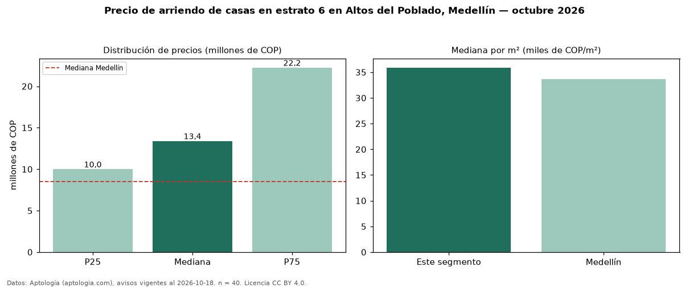

Precio de arriendo de casas en estrato 6 en Altos del Poblado, Medellín — octubre 2026
COP 13,40 millones al mes es el canon mediano de casas en estrato 6 en arriendo en Altos del Poblado, Medellín (n = 40 avisos). Frente a la mediana de toda la vivienda de estrato 6 de Altos del Poblado (COP 7,00 millones, n = 243), queda 91 % por encima; este segmento reúne el 16 % de esos avisos. Por metro cuadrado, la mediana es COP 35.890/m² al mes (n = 38), 41 % por debajo del conjunto de referencia (COP 61.056/m²). El área mediana anunciada es 350 m². El segmento con más oferta es el de 3 o más habitaciones (40 avisos, mediana COP 13,40 millones). La mitad central de los avisos va de COP 10 millones a COP 22,25 millones (razón 2,2), una dispersión alta. La mediana de todas las casas en arriendo de Medellín es COP 8,50 millones (+58 % de diferencia). Datos: Aptología (aptologia.com), CC BY 4.0 — https://www.aptologia.com/casas-en-arriendo/medellin/altos-del-poblado. Archivos: PDF, CSV con las cifras y gráfica PNG.

| Avisos únicos | 40 |
|---|---|
| Percentil 25 | COP 10.000.000 |
| Mediana | COP 13.400.000 |
| Percentil 75 | COP 22.250.000 |
| Mediana por m² | COP 35.890 |
Fuente: avisos vigentes de portales inmobiliarios recopilados por Aptología, deduplicados (mínimo 30 avisos únicos por celda). Precios pedidos, no cerrados. Fecha: 2026-10-18.